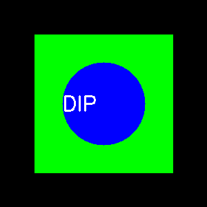

Pengolahan citra digital (Digital Image Processing) adalah cabang ilmu komputer
yang berfokus pada manipulasi gambar secara numerik. Salah satu teknik dasar yang paling penting
adalah filtering — proses mengubah nilai piksel berdasarkan lingkungan sekitarnya
untuk meningkatkan kualitas atau mengekstrak fitur tertentu.
Filtering digunakan untuk mengurangi noise, menajamkan citra, dan menonjolkan struktur
atau tepi objek. Pada eksperimen ini, kita akan membandingkan beberapa jenis filter populer
menggunakan pustaka OpenCV di Python.
Teori Singkat Tiap Jenis Filter
1. Gaussian Filter
Gaussian filter bekerja dengan memberikan efek blur (penghalusan)
menggunakan fungsi Gaussian. Filter ini efektif untuk mengurangi noise acak
tanpa terlalu menghapus detail penting pada gambar.
Fungsi utama:Noise reduction dan smoothing.
2. Median Filter
Median filter mengganti nilai setiap piksel dengan nilai median dari area tetangganya.
Teknik ini sangat baik untuk menghapus noise berbentuk titik hitam-putih
(dikenal sebagai salt-and-pepper noise).
Fungsi utama: Menghapus noise tanpa merusak tepi.
3. Sharpening Filter
Sharpening filter meningkatkan ketajaman gambar dengan menonjolkan perbedaan kontras
antara piksel berdekatan. Hal ini membuat detail seperti garis dan tekstur lebih terlihat jelas.
Fungsi utama: Menajamkan tepi dan memperjelas struktur.
4. Laplacian Filter
Laplacian filter menghitung perbedaan intensitas antar piksel menggunakan
operator turunan kedua. Filter ini berguna untuk mendeteksi tepi (edge detection)
karena menyoroti area dengan perubahan intensitas tajam.
Fungsi utama: Deteksi tepi objek dalam citra.
Perbedaan tiap=tiap Filter
Pilih salah satu jenis filter di bawah ini untuk melihat hasilnya secara visual:

Gambar asli sebelum proses filtering dilakukan.
Analisis dan Kesimpulan
Setelah dilakukan proses filtering terhadap citra uji, diperoleh hasil sebagai berikut:
Gaussian Filter berhasil menghaluskan gambar dan mengurangi noise acak,
tetapi menyebabkan sedikit kehilangan ketajaman.
Median Filter memberikan hasil lebih baik untuk noise berbentuk titik,
sambil mempertahankan tepi objek.
Sharpening Filter meningkatkan kontras dan detail, membuat tekstur lebih jelas
namun juga dapat menonjolkan noise jika gambar aslinya sudah kasar.
Laplacian Filter menyoroti area batas antar objek, cocok untuk
aplikasi deteksi tepi seperti pengenalan bentuk.
Kesimpulan:
Setiap filter memiliki karakteristik unik.
- Untuk perbaikan kualitas gambar, gunakan Gaussian atau Median.
- Untuk analisis struktur dan deteksi tepi, gunakan Laplacian.
- Untuk peningkatan visual, gunakan Sharpening.
Dalam praktik pengolahan citra nyata, sering kali kombinasi dari beberapa filter digunakan
untuk mencapai hasil optimal sesuai kebutuhan.